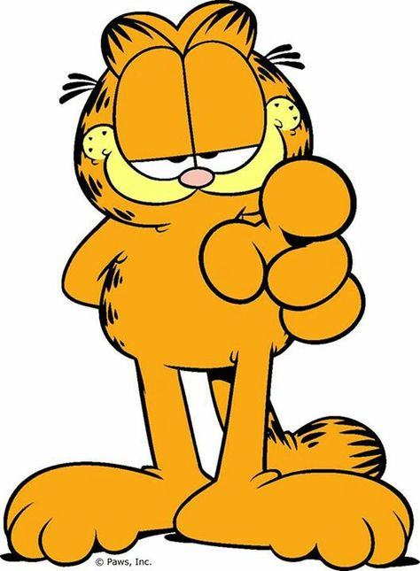

Lasagna Cat:

Garfield is an American comic strip created by Jim Davis.
Originally published locally as Jon in 1976, then in
nationwide syndication from 1978 as Garfield
It chronicles the life of the title character
Garfield the cat
Lore List:
- Orange
- Lasagna
- Odie
- Nermal AHAAHAHAHA
- John
- Mondays
War Crimes - From best to worst
- Lasagna Bombing of 1862
- The Great Orange Wave - BC 751
- The "There's only one Lasagna left" event - Unknown Date
- Great Monday's War - Ongoing
- OK Odie - July 15th 2077